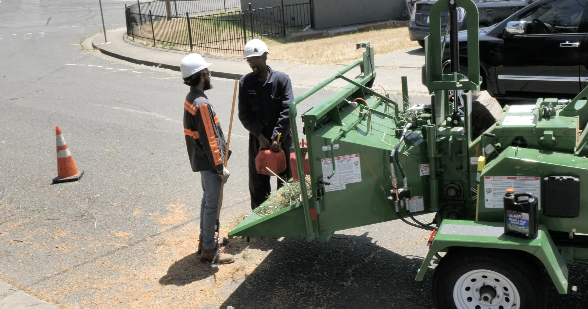
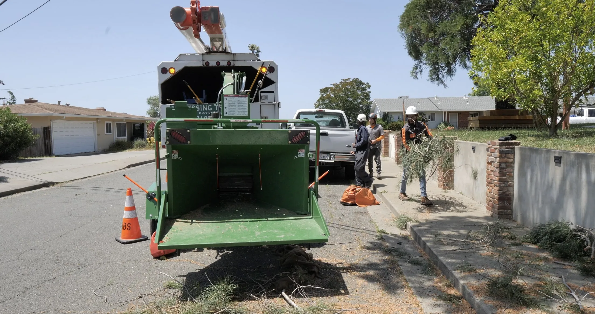
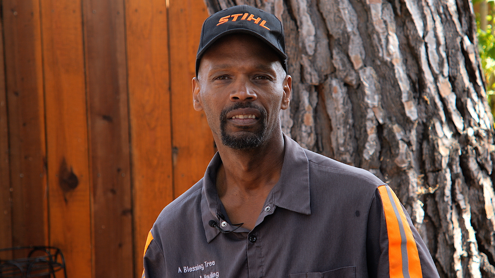

Family-Operated
"We're Not Out To Beat You But To Bless You"
A Blessing Tree Service provides a wide range of tree care services for residential and commercial clients throughout Solano County. The company has the training and equipment to handle everything from routine pruning and shaping to complete tree removal, and it also performs stump grinding and chipping for the convenience of its customers.
Owner David Benjamin attributes much of A Blessing Tree Service’s success to its customer-oriented approach to tree work. “We’re professional from start to finish and we put our hearts into everything that we do,” he affirms. “The size and cost of the project doesn’t matter to us—we treat each customer with respect and always put their satisfaction first.”
A Blessing Tree Service prioritizes quality control in every aspect of its operations, which Mr. Benjamin says is the key to ensuring positive results. “Before we start working on a tree, we do a comprehensive survey of what we’re going to do and make sure our plan is carried out from beginning to end. That type of attention to detail allows us to perform a quality job every time.”



David Benjamin
Phone: 707-980-0423
Email: blessingtreeservice@yahoo.com
Hours: Monday - Friday, 7am to 5pm
Emergency Services Available: Weekends and Afterhours
Solano County — Vallejo, Fairfield, Vacaville, Suisun City, Benicia, Dixon, Green Valley, and Martinez